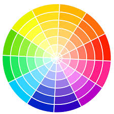
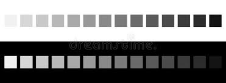

Nous contacter

- Les bracelets bresiliens de france
- lesbraceletsdefrance@gmail.fr

- 01 34 82 70 17
Il existe descentaines de milliers de bracelets brésliens différents. En général les bracelets varient en fonction de :
Nous disposons d'une palette de couleur gigantesque pour la confection de toutes vos envies les plus folles. Car pour le choix est quelque chose d'indispensable et qui rend ce bracelet brésiliens le vôtre. Donc voici nos couleurs:
 Nous avons de nombreuses declinaisons des couleurs dites basiques comme le jaune le orange le vert le violet le bleu le rouge. Et de même pour le Noir et Le Blanc nous possédons c'est deux couleurs ainsi que de légéres nuances de chaqu'une des deux couleurs.
Voici le tableau de convertion des tailles qui vous permmeterra de ne jamais vous tromper sur la longueur a choisir pour votre futurs bracelet brésiliens personnalisés.
Le prix d'un bracelets n'ai jamais fixe car les couleurs la formes la taille ainsi que la fermeture font varié ce prix. C'est pour cela lorsque vous nous passer commender vous aller passer dnas chaque rubrique pour choisir votre bracelet personnalisé et nous nous calculons le prix en fonction de vos options sur celui-ci. Mais pas de panique ! Un bracelet coute entre 3 et 10 euros maximum.
Prenons l'exemple de ce bracelet ci-dessus la longueurs est 16 cm, il possede 3 couleurs,sa fermeture est avec un noeud, bracelet de type fantaisie, ce bracelet coutera donc 5,50 euros.
- Les bracelets bresiliens de france
- lesbraceletsdefrance@gmail.fr
- 01 34 82 70 17